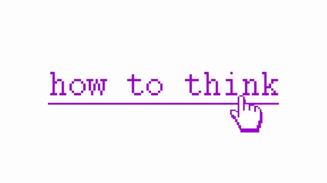

AI 시대에 명료하게 생각하는 법 — 5시간 풀강의

원본 영상 보기 →
- 명확한 사고는 규율이 아니라 환경 설계다
- 확률을 적는 행위 자체가 결정을 바꾼다
- 아는 것이 아니라 하는 것이 병목이다
How to Think Clearly In The Era Of AI: Full Course (5 Hours)
채널: Nick Saraev 게시일: 2026-09-02 원본: https://www.youtube.com/watch?v=QLLuZbuTIRc
한 줄 요약
지난 3년간 매년 100만 달러 이상을 번 사업가 Nick Saraev가, 대학에서 5년간 행동신경과학을 연구한 경험을 바탕으로 "명확하게 사고하는 법"을 5시간짜리 강의로 정리했다. 사고력을 게임 캐릭터의 스탯처럼 다루며, 수면·환경·공기 질 같은 '하드웨어' 최적화(누적 시 인지 능력 150~200% 개선)와 기댓값·파워 법칙·베이즈 추론 같은 '소프트웨어'(사고 프레임워크), 그리고 트리거-행동 계획·프리모템·5분 타이머 같은 즉시 실행 기법까지 순서대로 다룬다.
전체 내용 정리
사고는 세 부품으로 이뤄진 생물학적 과정이다
Nick은 인지(cognition), 즉 사고를 세 부분으로 나눈다. 주의(attention)는 끊임없이 밀려드는 감각 정보 중 극히 일부만 통과시키는 문지기이자 스포트라이트다. 작업기억(working memory)은 한 번에 몇 개만 올려놓고 작업한 뒤 치우는 작업대다. 실행 기능(executive function)은 무엇을 작업대에 올리고 언제 다른 일로 넘어갈지 결정하는 현장 감독이다. 대부분의 사람은 이 셋이 모두 부실한 상태로 살아서 늘 머리가 뿌옇고 집중이 안 되고 생각이 결론까지 이어지지 않는다. 이 강의의 목표는 하드웨어·소프트웨어 최적화로 얻은 보너스 스탯을 이 세 능력치에 부어 넣는 것이다.
뇌는 비싸고 인색하며, 에너지 소비량은 사실상 고정돼 있다
뇌는 체중의 약 2%지만 안정 시 에너지의 약 20%를 쓴다 — 단위 무게당 가장 비싼 조직이다. 그래서 진화는 뇌가 비용을 최소화하도록 압박했고, 뇌는 항상 계산보다 추측을, 결정보다 습관을, 새것보다 옛것을 택한다. 청킹이나 실행 의도 같은 기법이 통하는 이유가 이 타고난 인색함을 역이용하기 때문이다. 더 놀라운 사실은 어려운 과제를 풀 때와 창밖을 멍하니 볼 때의 전체 뇌 에너지 소비량이 통계적으로 유의미하게 다르지 않다는 점이다(국소 차이는 최대 5% 정도). 어차피 같은 칼로리를 태울 거라면 그 칼로리를 최대한 효율적으로 쓰는 게 합리적이라는 게 Nick의 논리다.
청킹: 의미를 붙여 작업대에 더 많이 올린다
심리학의 현재 합의는 사람이 작업기억에 의미 있는 항목(청크)을 한 번에 3~5개, 반올림하면 약 4개 담을 수 있다는 것이다. "E I L N D A E" 여덟 글자는 못 외워도 재배열해 "deadline"이라는 한 단어로 만들면 청크가 하나로 줄어 쉽게 외운다. "149217762001"은 12청크지만 "1492(콜럼버스), 1776(미국 독립), 2001(9·11)"로 나누면 3청크가 된다. 특정 분야 전문가(세무사에게 "분기 세금 신고 마감")는 그것을 아예 한 개념, 1청크로 저장한다. 체스 마스터가 말 위치를 잘 외우는 것도 뇌가 더 좋아서가 아니라 32개 말을 3~4개 패턴으로 묶기 때문이다. 자기 역량 범위 안에서 더 많이 기억하는 사람은, 살면서 더 큰 정보 덩어리에 의미를 붙여온 사람이다.
동물 실험이 알려준 것 — 환경만 바꿔도 뇌가 바뀐다
Nick은 대학에서 쥐의 먹이 시간, 우리 짝, 조명, 훈련 방식을 바꾸고 인지 능력을 측정하는 실험실에서 일했다. 가장 강력한 개입은 주사나 약물이 아니라 먹이 시간 몇 시간 차이, 조명을 언제 끄느냐, 자기 전 어떤 쥐와 놀았느냐 같은 것이었고 30~50%의 성능 차이를 냈다. 1997년 유명한 실험에서 장난감·터널·러닝휠·더 많은 우리 짝이 있는 "풍요로운 환경"에 놓인 쥐는 기억 형성을 담당하는 뇌 영역(치상회)의 과립세포층이 대조군 대비 15% 두꺼워졌다 — 약물도 훈련도 없이 오직 환경만으로. 사람 대상 실험에서는 지식 노동자 24명을 6일간 가짜 사무실에 넣고 공기(외부 공기 유입량, CO2, 휘발성 유기화합물)만 바꿨더니, 잘 환기된 날의 인지 검사 점수가 평소의 두 배였고 특히 전략·계획·우선순위 같은 실행 기능이 가장 크게 올랐다. 인간은 자기 환경(어디 살지, 누구와 어울릴지)을 스스로 설계할 수 있으니, 하드웨어 측면의 명확한 사고는 규율의 문제가 아니라 한 번 하면 되는 사소한 엔지니어링이다.
의지력은 저수지가 아니다 — 강한 사람은 애초에 유혹받지 않는다
대부분은 의지력을 쓸 때마다 조금씩 줄어드는 저수지로 생각한다. 하지만 창밖을 볼 때와 경제적으로 가치 있는 일을 할 때 뇌 에너지 소비가 같다면 그 고갈되는 자원은 어디 있는가. 과학적으로 뒷받침되는 답은, 의지력이 강해 보이는 사람은 애초에 실수할 기회가 있는 상황에 자신을 두지 않는다는 것이다. 회의에서 폰을 안 보는 사람은 대개 폰을 아예 안 가져온 사람이다. 가드레일을 올리고 볼링을 치면 거터에 빠지는 것 자체가 선택지에서 사라진다. Nick은 "비대칭 베팅" 개념을 제시한다 — 의지력이 유한하다고 가정하고 살면 설령 틀려도 더 나은 환경과 여유 용량이 남고, 무한하다고 가정하면 최악의 순간에 무너진다. 그러니 어느 쪽이 유리한 우주로 이어지는 믿음을 택하라(도구적 합리성). 핵심 교훈: 계획의 어느 단계도 "그 순간에 참기"에 의존하게 만들지 마라. 대마초를 끊으려 여러 번 의지로 실패한 Nick은 결국 "X, Y와 어울리면 피운다"는 규칙을 발견하고 그 사람들과 어울리기를 그만두자 저절로 끊었다. 유혹 도중이 아니라 유혹 전에 일을 해둔 것이다.
선택 설계 — 당신의 하루는 대부분 남이 대신 내린 결정이다
옵션을 제시하는 방식이 어떤 옵션이 선택될지에 영향을 준다는 개념으로, 책 『넛지』에서 나왔다. 중립적으로 두 개 이상의 선택지를 제시할 방법은 없다. 구내식당 매니저가 메뉴를 빼지 않고 사진 품질만 바꿔도 사람들이 먹는 것이 달라진다. 2003년 비교에서 옵트인 방식인 독일은 장기 기증자가 12%, 바로 옆 옵트아웃 방식인 오스트리아는 99.98%였다 — 종이 위 한 줄의 차이. 자동재생, 알림 기본 켜짐, 연간 요금제 선택, 계산대 옆 사탕은 모두 KPI를 위해 설계된 기본값인데, 그 KPI가 당신 것이 아닐 뿐이다. 진단 도구: 하루의 모든 전환 지점에서 "내가 아무것도 안 하면 어떻게 되는가?"를 물어라. Nick은 오전 5시에 컴퓨터를 켜면 Chrome만 있고, 북마크바에 1·2·3·4·5로 나열된 업무 링크만 있으며, 그 외 사이트는 오후 3시까지 차단된다. 아무것도 안 하면 일하게 되는 미끄럼틀을 스스로 설계한 것이다.
마찰 — 이 강의를 관통하는 황금률
마찰은 사람과 행동 사이의 비용이다. 클릭 하나 더, 복도 10미터 더, 비밀번호 한 번 더. 행동을 줄이려면 마찰을 더하고, 늘리려면 마찰을 없앤다. 구내식당 연구에서 방울토마토를 25cm 멀리 옮기자 섭취가 9%, 완두콩은 13% 줄었고, 완두콩 스푼을 집게로 바꾸자 16.5% 줄었다. Scott Alexander의 2009년 에세이 인용: 무언가를 안 일어나게 하는 데 불가능하게 만들 필요는 없고 불편하게만 만들면 된다, 1~2초짜리 사소한 불편도 대다수를 대부분의 경우 멈추게 한다. 밖에서 보면 이게 다 규율처럼 보이지만, 월 1만 달러 버는 사람은 5배 일하는 게 아니라 돈 버는 활동을 아주 쉽고 자동으로 하도록 환경을 설계했을 뿐이다.
하드웨어 최적화 1: 수면
이 부분은 화려하지 않지만, 대부분 40~80%의 인지 개선을 기대할 수 있다(효과는 더하는 게 아니라 곱한다). 수면 장애부터 배제하라 — 미국 남성의 약 30%가 수면 호흡 장애(수면 무호흡 및 그 조용한 사촌)를 가진 것으로 추정되며 대개 체중 문제다. 8시간 누워 5시간치 수면만 얻고, 증상(브레인 포그, 9시간 자도 피곤, 늘 졸림, 커피 과다)이 성격으로 오해된다. Nick 본인도 이것을 몇 년간 규율 부족으로 착각했다. 7~9시간 자라 — 6시간 수면을 2주 지속하면 완전히 밤샌 것과 맞먹는 수행 저하가 쌓이는데, 정작 본인의 졸림 인식은 초기 며칠 이후 변하지 않는다(손상을 판단할 도구 자체가 손상됨). 일정한 기상 시각 — 코르티솔·아드레날린 같은 각성 화학물질을 주입하는 일주기 시계는 며칠간 일정한 수면·기상이 있어야 그 시각에 고정된다(6~12% 개선). 취침 10시간 전부터 카페인 중단(3~8%) — 카페인 반감기가 길어 정오 이후 커피는 자정에도 50mg가 남는다. 아침엔 밝게, 저녁엔 어둡게(3~8%) — 기상 후 1시간 내 자연광 10분. 블루라이트 자체보다 화면 속 콘텐츠(도파민 유발 피드)가 더 문제다. 춥고 어둡고 조용한 방(2~6%, 약 18~20°C).
하드웨어 최적화 2: 영양과 운동
혈액 검사로 결핍(철·페리틴·B12·비타민D·갑상선)과 대사 지표를 확인하라 — 결핍은 게으름·집중력 저하로 나타나며 5~15%를 잠근다. 알코올 끊기(4~10%) — 간 질환보다 수면이 문제다. 술은 빨리 잠들게 하지만 밤 후반의 REM 수면을 망쳐 회복감과 기억 공고화를 방해한다. Nick은 지난 8년간 술을 12잔 미만 마셨다. 대마초도 마찬가지(2~6%). 단백질과 섬유질(각 2~4%) — 섬유질은 장내 미생물을 먹이고 이는 기분·인지와 강하게 연관된다. 크레아틴(1~3%, 수면 부족 시 더) — 문헌상 유일하게 실질적 근거가 있는 보충제로 하루 3~5g, 20센트 수준. VO2 max 올리기(10~20%) — 유산소 운동은 뇌 혈류를 늘리고 해마의 신경 생성을 촉진하는 BDNF 발현을 높인다. REHIT 프로토콜(주 3회, 10분 세션당 10~20초 전력 질주 2회)로 좌식 성인이 6주에 VO2 max를 15%(남성) 올렸다 — 총 18분의 고강도 운동. 습관을 쌓아 아침에 밖에서 친구와 운동하면 밝은 빛·일정한 기상·운동·사회적 교류(우리 짝)를 한 번에 해결한다.
하드웨어 최적화 3: 작업 공간
공기 — 실내 CO2가 약 800ppm을 넘으면 인지가 나빠지기 시작한다. 외부 공기는 약 420ppm, 내쉬는 숨은 약 40,000ppm이라 밀폐된 사무실은 1~2시간이면 1,000ppm을 넘는다. 한 연구에서 945ppm에서 성능 15% 하락, 1,400ppm에서 50% 하락. 200달러짜리 CO2 모니터를 사거나 창문을 늘 조금 열어둬라(선풍기는 공기를 재순환할 뿐 부족). 알아들을 수 있는 말소리 제거(2~6%) — 가사 있는 음악, 팟캐스트, 주변 대화 금지(악기 음악·브라운 노이즈는 OK). 뇌는 들리는 말의 의미를 자동으로 처리하려 하고, 대화를 따라가기 시작하면 추론 능력에 4~45%의 세금이 붙는다. Nick의 고객사 작문팀이 개방형 사무실에 붙어 앉아 있었는데, 잘하는 작가들을 몇 주간 폐쇄형 사무실로 옮기자 KPI가 급등했다. 창가에서 일하기(2~5%), 잡동사니 줄이기(1~3%, 시야의 모든 물체가 주의를 두고 경쟁 — "편향된 경쟁"), 알림 일괄 처리(3~6%) — 알림 하나가 주의 잔여물(attentional residue)을 남겨 최대 20분간 인지 능력의 10~15%를 앗아간다. 배너·소리·뱃지를 다 끄고 하루 2~3회 정해진 시간에만 확인하라. 화면 단일 작업(3~8%) — 전체화면, 다른 탭·앱 없음, URL바·작업표시줄까지 숨김.
소프트웨어 1: 기댓값(Expected Value)
소프트웨어(사고 알고리즘)는 하드웨어와 달리 무한히 확장 가능하며 수천 %의 개선을 줄 수 있다. 곱셈을 아는 사람이 덧셈만 아는 사람보다 압도적으로 빠른 것처럼. 기댓값은 각 결과의 값에 그 확률을 곱해 모두 더한 것이다. 동전 던지기(앞=+$3, 뒤=-$1)의 기댓값은 0.5×3 + 0.5×(-1) = $1이므로 매번 하면 이득이다. 실전 예: 10억 달러에 팔릴 SaaS를 시작하는데 성공 확률이 0.1%라면 기댓값은 100만 달러. 반면 연 50만 달러를 버는 기존 서비스 회사가 5년 더 갈 확률 50%라면 기댓값은 500만×0.5 = 125만 달러. 즉 화려해 보이는 SaaS보다 지루한 기존 사업의 기댓값이 더 높다. 정확한 숫자를 알 수 없어도 괜찮다 — 요점은 확률을 적어보는 행위 자체다. "위험한 것 같아"는 수정 불가능하지만 "20%"는 저널에 적어두고 1년 뒤 검증할 수 있는 falsifiable한 예측이다. 결과주의(resulting)의 함정(Annie Duke, 『Thinking in Bets』): 결정의 질을 결과로 판단하는 경향. 기댓값이 더 높은 B를 골랐는데 20% 확률이 빗나갔다고 나쁜 결정이 되는 건 아니다. 콜드 아웃리치가 딱 이렇다 — 약 20%만 메일을 보고, 표본이 작으면 "안 되네" 싶지만 표본이 커지면 크게 터진다.
소프트웨어 2: 파워 법칙과 체인 법칙
파워 법칙은 x = y^n, 즉 소수의 항목이 전체를 좌우한다. 20명의 고객 중 1명이 나머지 16명분을 벌어준다. 파레토 원칙(결과의 80%가 원인의 20%). Microsoft는 고객 불만의 80%를 유발하는 버그 20%에 자원을 집중해 4배 적은 자원으로 같은 결과를 낸다. Nick의 한 포트폴리오 회사는 연 100~120만 달러 매출 중 한 고객이 80만 달러 이상을 차지한다(키맨 리스크). 사용법: 산출물을 결과 기준 내림차순 정렬 → 상위 20%에 더 투자하거나 하위 80%를 잘라낸다. 체인 법칙은 그 역으로, 시스템의 신뢰도는 링크들의 평균이 아니라 곱이다. 3단계 공정의 성공률이 100%·100%·20%면 전체는 20%다. 단계가 많을수록 실패 기회가 늘어난다(0.9를 세 번 곱하면 72.9%). 그래서 단계를 최소화하고 가장 약한 링크를 먼저 강화하라. 구분: 파워 법칙은 여러 시스템 중 어느 것을 쓸지 고를 때, 체인 법칙은 하나의 시스템을 최적화할 때 적용한다.
소프트웨어 3: 지역 최댓값과 전역 최댓값
인간은 늘 위로 오르려 하고, 매 순간 가장 크게 오르는 선택을 한다. 하지만 봉우리에 도달하면 모든 방향이 내리막이라 갇힌다. 지금 있는 영역의 정상이 지역 최댓값, 모든 영역의 정상이 전역 최댓값이다. 더 높은 봉우리로 가려면 먼저 계곡을 건너야 한다 — 일시적으로 돈을 덜 벌거나 남들 눈에 뒤처져 보이는 기간을 감수해야 한다. 지역 최댓값에 갇힌 신호: (1) 개선폭이 계속 줄어든다 (2) 투입을 늘려도 산출이 안 는다 (3) 나보다 기술이 부족한 사람이 다른 언덕에서 나를 이긴다. Nick은 2024년 콜드이메일·Upwork 기반 자동화 회사로 월 5만 달러를 못 넘다가, 오가닉 브랜드를 퍼널로 쓰는 사람들을 보고 지역 최댓값에서 내려왔다. 계곡 비용을 구체적 숫자로 정량화하고(그는 3개월간 월 2.5만 달러 감소를 각오했다), 한 번에 뛰어들지 말고 시간의 10~20%만 새 시도에 배분하라.
소프트웨어 4: 주의 잔여물과 아크라시아
주의 잔여물(Sophie Leroy, 2009): 과제 A에서 B로 전환해도 주의의 일부가 A에 끈적하게 남아 최대 20분간 다음 과제를 방해한다. 현대인은 3~5분마다 방해받으므로 사실상 항상 이 상태다. 완화법: 전환 직전 1분간 "지금 어디까지 했고 다음 행동은 무엇"인지 재개 노트를 남기면 잔여물이 3분의 1로 줄어든다. Nick의 규칙: 열려 있는 과제는 최대 2개. 아크라시아(아리스토텔레스): 옳은 행동을 알면서도 안 하는 상태. Scott Alexander의 에세이 "합리성은 그렇게 유용하지 않다"는 합리성을 진지하게 연습한 사람들조차 삶의 성공과의 상관은 0.1 정도이며, 병목은 도구가 아니라 아크라시아라고 결론짓는다 — 아는 것이 아무리 좋아도 행동할 의지가 없으면 소용없다. Nick은 1.4만 명이 매일 "오늘 뭘 했다"를 올리는 커뮤니티를 2년간 운영한 결과, 꾸준히 돈을 버는 건 가장 많이 아는 사람이 아니라 이메일을 보내고 MVP를 만들고 전화해서 망치는 사람들이라고 말한다. 해결책: 다음 행동을 사소하고 단순하고 명확하게 만들어 트리거에 붙인다("화장실 다녀와 자리에 앉으면 다음 사람에게 전화한다").
소프트웨어 5: 지도는 영토가 아니다 (Nick이 꼽는 최고의 모델)
1931년에 나온 개념. 지도는 현실의 압축본이고, 압축돼 있기 때문에 유용하다(지도가 영토만 해지면 쓸모없다). 하지만 지도는 항상 진실의 lossy 버전이며 객관적 현실과 다르다. 당신이 믿는 모든 것 — 고객이 뭘 원하는지, 몸이 카페인을 어떻게 처리하는지, 왜 지난주 출시가 실패했는지 — 은 지도다. 대시보드의 CRR·리텐션·MRR·파이프라인 가치는 비행기 계기판 같은 지도다. "CRM에 6자리 파이프라인이 있다"지만 그 리드들이 4~5개월 전에 다 죽었을 수 있고, 리텐션이 좋아 보이지만 떠나는 사람이 실은 가장 좋은 회원일 수 있다. 지도와 영토가 어긋날 때는 항상 영토가 이긴다. 실험실에서 먹이 시간을 바꾸자 쥐가 미로를 빨리 풀었지만, 쥐가 똑똑해진 게 아니라 배고파진 것이었다 — 실험 현장에 있지 않았다면 몰랐을 것이다. 성장 빠른 회사가 조직이 납작한 이유는 경영진이 직접 고객을 보기 때문이다. Nick은 AI 에이전트의 산출물(요약 전사, 인박스 다이제스트)이 "지도의 지도"라서 비싼 결정 전에는 항상 원본(통화 녹음)을 확인한다 — 요약은 "미팅 좋았다"고 하지만 녹음을 보면 고객의 망설임이 보인다.
소프트웨어 6: 율리시스 계약
정신이 맑을 때 내린 결정이 미래의 자신의 선택지를 제한하게 만드는 것. 오디세우스는 세이렌에 다가가기 전, 맑은 정신일 때 부하들에게 자기를 돛대에 묶고 무슨 애원을 해도 풀지 말라고 명령했다. 핵심은 밧줄이 아니라 타이밍이다. 실전 예: (1) 폰을 다른 방에 둔다(마찰 추가 + 맑은 자신에게 30초를 벌어줌) (2) 타인에게 약속한다 — Nick은 매일 영상을 올린다고 공개 선언해 수천 명의 기대라는 비공식 계약에 묶여 있다 (3) 금전적 스테이크 — 실패 시 직접 경쟁사나 싫어하는 단체에 돈을 기부하게 한다.
소프트웨어 7: 기회비용
Bastiat의 깨진 창문 우화 — 창문이 깨지면 유리공에게 일이 생기니 중립이라는 게 당시 통념이었지만, 상점 주인이 신발이나 책에 쓸 돈을 못 쓰게 된 것(보이지 않는 쪽)이 진짜 비용이다. 기회비용은 택하지 않은 차선책 중 가장 가치 있는 하나다. $30 점심의 진짜 비용은 $30이 아니라 $30 + 1.5시간 × 시급이다(시급 $45면 $97.50). 모든 "예"는 어떤 것에 대한 "아니오"다. 사용법: 시간을 잡아먹는 일에 "예"라고 할 때, 그로 인해 못 하게 되는 구체적인 일을 명시적으로 말하라 — "이 10시 통화에 예스, 그래서 10시에 돈 버는 스크립트 쓰기에 노."
소프트웨어 8: 굿하트의 법칙
Charles Goodhart(1975): "측정값이 목표가 되면 좋은 측정값이기를 멈춘다." Charlie Munger: "인센티브를 보여주면 결과를 보여주겠다." 1902년 하노이에서 프랑스 식민정부가 쥐꼬리 하나당 1센트를 줬더니 꼬리는 쏟아졌지만 쥐는 안 줄었다 — 사냥꾼들이 꼬리만 자르고 쥐를 풀어주거나 아예 쥐를 길렀다. 고객 지원팀을 처리한 티켓 수로 평가하면 티켓을 대충 닫고, 영업팀을 예약 건수로 평가하면 자격 없는 미팅을 잡는다. 방어법: (1) 이해 안 되는 행동을 보면 "누가 이득을 보는가"를 물어라 (2) 지표에 목표를 걸기 전, 그것이 무엇의 대리 지표인지 말하고, 그것이 좋아질 때 나빠지는 반대 지표를 함께 추적하라(속도 vs 오류율, 닫힌 티켓 수 vs 재오픈된 티켓 수, 조회수 vs 시청 유지율).
소프트웨어 9: 체스터턴의 울타리
1929년 우화 — 개혁가 둘이 길을 걷다 울타리를 만난다. 한 명은 쓸모없어 보이니 부수자고 하고, 다른 한 명은 왜 있는지 먼저 알아내고 나서 부수라고 한다. 모든 울타리(규칙·법·워크플로우·SOP)에는 누군가 시간·에너지·돈을 투자한 이유가 있다. 이해 못 하는 단계를 잘라내면 결단력 있어 보이지만, 그건 그 조건들이 생겨난 실험을 강제로 다시 돌리는 것이고 이번엔 당신이 대가를 치른다. Nick의 집 찬장 위칸에 접시가 있는 이유는 4개 넘게 쌓으면 문에 걸려서다. 워크플로우: 규칙을 없애고 싶으면 왜 있는지 알아낸다 → 만든 사람에게 묻는다 → 히스토리(Google Docs 편집 기록, git log, 옛 이메일)를 본다 → 그래도 모르고 되돌릴 수 있으면 없애보고 관찰한다 → 되돌릴 수 없으면 남겨둔다. 대개 10분이면 된다.
소프트웨어 10: 베이즈 정리 (자연 빈도로)
사전 확률로 대략 추측하고 새 정보로 갱신한다. 모든 것을 참/거짓이 아니라 확률로 다룬다. 핵심 질문: "X가 참일 때 vs 거짓일 때, 이 증거가 나타날 가능성은 각각 얼마인가?" 영업 통화 끝에 "좋네요, 자료 보내주세요"라고 하면 살 사람도(0.9) 안 살 사람도(0.9) 똑같이 말하므로 아무 정보가 없다 — 통화가 끝난다는 증거일 뿐이다. 반면 "월간 대신 분기별로 청구 가능한가요?"는 살 사람은 자주(0.9), 안 살 사람은 거의 안 하므로(0.1) 강한 증거다. 작은 단계로, 퍼센트 대신 배당률(odds)로 갱신하고 곱해 나간다. 파이프라인 각 단계의 조건부 확률을 과거 데이터로 구해 곱하면 회사가 실제로 낼 수 있는 돈을 정밀하게 추정할 수 있다.
소프트웨어 11: 페르미 근사
물리학자 Fermi는 1945년 핵실험에서 폭발 충격파에 종이 조각을 떨어뜨려 이동 거리로 폭발력을 약 10킬로톤으로 추정했다(실제는 약 2배 — 물리학자에겐 놀라운 정확도). 방법: 분해 → 추정 → 곱하기. 예: 고객 5명을 얻는 데 필요한 콜드이메일 — 긍정 회신율 0.5%, 회신→통화 25%, 통화→성사 20%를 곱하면 1/4,000, 즉 고객 1명당 4,000통, 5명이면 20,000통. Nick이 커뮤니티의 실제 스레드를 뒤져보니 첫 고객 획득 시점이 대략 2,000~8,000통이었다. 공격적으로 반올림하라(7→10, 350→300). 개별 추정은 틀리지만 반대 방향으로 틀려서 평균이 맞는다. AI가 이걸 아주 잘하므로 1차 추론자로 쓴다.
소프트웨어 12: 시급과 오프로드 규칙
두 개의 시급이 필요하다. 평균 시급 = 작년 총소득 ÷ 총 노동 시간(부업 포함). 한계 시급 = 하루의 가장 중요한 돈 버는 일(영업 통화, 스크립트 작성)에 한 시간을 쓸 때 버는 돈. 한계 시급은 보통 평균 시급보다 훨씬 높다(Nick은 커뮤니티 관리에 한 시간 쓰면 $6,000~8,000). 오프로드 판단: (직접 할 시간 × 한계 시급) > (외주 가격 + 감독 시간 × 한계 시급)이면 넘겨라. 함정은 감독 비용을 0으로 잡는 것이다 — "좋은 사람을 뽑았으니까"가 아니라 "그들이 나만큼 잘하는가"를 물어야 하고, 대개 아니라서 수정·재작업 시간이 든다. 반쯤 된 일은 안 된 일보다 나쁠 수 있다. 1인 사업자·프리랜서는 체인 법칙 때문에 대부분 외주가 이득이 아니다 — 신뢰할 수 있는 한 단계가 영리하게 외주한 12단계보다 낫다. AI 에이전트가 이 계산을 바꾸지만, 관건은 감독(에이전트 작업을 직접 하는 것보다 빠르게 검증할 수 있는가)이다. 참고: 시간을 사면 행복이 오른다는 연구가 있고, 되찾은 시간을 틱톡에 쓰면 $150 주고 틱톡을 산 셈이다.
소프트웨어 13: 계획 오류 승수
과제는 늘 생각보다 오래 걸린다. 계획할 때 뇌는 매끄럽게 진행되는 최선의 시나리오만 시뮬레이션한다 — 일이 잘못될 경우의 수가 잘될 경우의 수보다 압도적으로 많은데도. 900억 달러 규모의 교통 프로젝트 258건 연구: 10건 중 9건이 과소 추정, 평균 초과 28%(철도만 45%). 실전: 내부 추정치에 상수를 곱하라 — 많은 이가 3배, 어떤 이는 2배, Nick은 소규모 프로젝트라 1.5배. 그는 클라이언트에게 "2~3주"라고 말하지만 실제 예상은 1주다. 내부 관점 vs 외부 관점(참조 클래스): "이 강의 쓰는 데 얼마 걸릴까"가 아니라 "지난 세 강의는 얼마 걸렸나"를 본다. 사람들이 "50% 확신"한 날짜에 실제로는 13%만 완료됐고, "99% 확신"에 45%만 완료됐다.
소프트웨어 14: 탐색-활용 트레이드오프
10개의 슬롯머신, 100번의 당김. 잘 나오는 걸 아는 머신을 당기면(활용) 더 나은 머신을 발견할 기회를 잃고, 모르는 머신을 당기면(탐색) 확실한 수익을 잃는다. 연구상 인간 뇌엔 이 알고리즘이 내장돼 있다 — 시행 횟수가 많이 남았을 땐 탐색을, 보상이 줄거나 시행이 얼마 안 남았을 땐 활용을 늘린다. 시간 지평이 길면(젊으면) 공격적으로 탐색하라 — 지금 더 나은 걸 찾으면 남은 모든 시간에 활용할 수 있다. 현재 보상이 줄면 탐색을 늘리고, 늘면 승자를 찾았으니 활용하라. Nick의 궤적: 22세 방문판매(극단적 탐색) → 스크립트 활용으로 월 2만 달러 → 그게 멈추자 AI·콘텐츠 마케팅으로 탐색 → 월 9만 달러(지역 최댓값) → 다시 탐색, 개인 브랜딩 발견 → 최근 최고 월 54만 달러. 인생엔 탐색의 계절과 활용의 계절이 번갈아 온다.
즉시 실행 기법 1: 탭(Trigger-Action Plan)
"X가 일어나면 Y를 한다" — 코드의 if-then, 사업의 SOP, 삶의 규칙. "이걸 해야 하나?"라는 질문 자체를 제거한다. 학술 용어로는 실행 의도(implementation intention, Peter Gollwitzer). 2006년 메타분석에서 효과 크기 0.65 표준편차 — 30초 개입치고 매우 크며, 50번째 백분위에서 75번째로 도약시킨다. 좋은 트리거의 3요소: (1) 명백함 — "미룰 것 같을 때"는 안 되고("당신은 자기가 미루는 걸 80% 모른다"), "브라우저에서 새 탭을 열 때"는 된다 (2) 체감됨 — 손에 폰이 느껴질 때, 문 닫히는 소리, 의자에 앉을 때 (3) 신뢰성 — "오후 3시"는 인간이 내부 시계가 없어 실패, 대신 미리 맞춘 알람. 행동은 작고 물리적으로 — "2시간 글쓰기"가 아니라 "구글 독스를 열고 한 문장 쓴다"(한 문장짜리 아이디어만 갖긴 어려워서 저절로 이어진다). 설치법: 눈 감고 트리거를 생생히 상상 → 행동을 10번 리허설(2분 소요). 트리거를 경로에 놓기(운동화를 문 앞에). 안 되면 당신 탓이 아니라 트리거 탓이니 더 눈에 띄는 걸로 바꿔 다시 리허설. Nick은 탭을 사슬로 엮어(한 탭의 행동이 다음 탭의 트리거) 기상부터 첫 음성 답변까지 1분 30초 만에 업무 뇌 회로를 켠다 — 마이클 펠프스가 매번 같은 루틴을 하는 것처럼 입력을 표준화한 것이다.
즉시 실행 기법 2: 노티싱(Noticing)
설치하면 시간이 지나기만 해도 성장률이 올라가는 배경 함수(패시브 투자 전략). 혼란을 알아차리기 — 현실에서 혼란은 몇 초 만에 잠재의식이 두려움으로 눌러버린다. 사라지기 전에 "나는 혼란스럽다"고 소리 내 라벨링하면 지도가 영토에 가까워진다. 대부분은 하루에 겪는 혼란의 5% 미만만 다룬다. 고객이 "캠페인 잘 되고 있다"는데 대시보드가 다르면 "제 데이터와 안 맞네요, 잠깐 얘기할까요"라고 말하라 — 똑똑해 보이려 혼란을 숨기지 않는 사람이 대개 가장 똑똑하다. 플린치(ugh field) — 이메일이나 숫자를 보고 "으" 하며 피하는 것. 피할 때마다 그 회로가 강해진다(회피하는 신경 회로는 강화, 안 쓰는 건 위축). 최소 10초간 그것과 함께 앉아 왜 그런 느낌인지 물어라 — 좋은 것들은 대개 고통스러운 문 뒤에 있다. shoud(해야 해) — "책 읽어야 하는데", "전화해야 하는데". 왜 해야 하는지, 정말 원하는지 물어라. 당신의 "해야 해" 대부분은 친구·가족·소셜미디어·기관에서 빌려온 것이다. 세 신호 모두 탭으로 만들 수 있다.
즉시 실행 기법 3: 프리모템(Premortem)
포스트모템("왜 실패했나")을 시제만 바꾼 것: "지금부터 한 달 뒤, 이 프로젝트가 실패했다. 왜 실패했는가?" "뭐가 잘못될 수 있나"는 추상적 질문이라 뇌가 추상적 답을 내지만, "왜 실패했나"는 뇌가 이야기로 취급해 등장인물·사건·구체적 실패("화요일에 누가 이메일을 안 보냈다")를 채워 넣는다. 여러 이야기를 모아 실제 실패 유형으로 분류한다(이메일 관련 이야기가 많으면 그게 유력한 실패 모드). 루프: 계획을 쓴다 → 한 주 뒤 실패했다고 가정 → 과거 시제로 이야기를 쓴다 → 모아서 원인을 고친다 → 반복. AI의 최고 활용처 — 모델은 수십만 개의 서사를 순식간에 만들어낸다. 종이 한 장에 15분이면 되고, 대체하는 것(실제 실패)은 몇 주~몇 달이 걸린다.
즉시 실행 기법 4: 리졸브 사이클(5분 타이머)
"나중에 하지"만큼 좋은 아이디어를 죽이는 말은 없다. 5분 타이머를 맞추고 실제로 문제를 풀어보라 — 계획이 아니라 시도. 너무 어려워 보이는 문제에 실제로 30초도 안 쓰고 포기했을 것이다. Nick은 불가리아 여권 발급 과정에서 동네 공증인에게 전화 한 통(번호 찾기 1분, 할 말 정리 2분, 통화 2분 — 총 5분) 하는 걸 45일간 미뤘다. 세 결과: (1) 할 가치가 없다는 걸 깨닫는다(승리, 목록에서 삭제) (2) 5분 안에 끝낸다(승리) (3) 5분 이상 걸린다는 걸 안다 → 다음 5분 타이머로 이번엔 "다음 다섯 단계"를 불릿으로 적는다 → 또 다음 5분 타이머로 실제로 한다. 팁: 물리적 탁상 타이머(폰 멀리하기), 생각하면서 쓰기(적으면 IQ 20점 오르고 작업기억이 4개에서 6~7개로 확장), 미리 종료 상태 정의("이메일이 전송됨", "생각해봤다"는 불충분).
AI를 지능적으로 쓰는 법
아첨(sycophancy) — 현대 모델은 인간 평가 점수를 최대화하도록 후훈련됐고, 인간은 자기 말에 동의하는 답을 좋아한다. Anthropic이 자사 Claude 계열 모델을 테스트해 모든 과제에서 아첨을 확인했고, 인간 평가자는 정확한 답보다 설득력 있거나 아부하는 답을 선호했다. AI는 정의상 지도인데(신경망은 세상을 정보 구조로 압축), 그 지도가 "당신은 옳은 방향으로 가고 있어요"라고만 하면 쓸모가 없다. 해결책 — 레드 팀잉: "이거 좋아?" 대신 "왜 이건 나쁜 아이디어인가"를 물어라. 그러면 희망이 새어 들어가지 않아 모델이 지능을 총동원해 약점을 나열한다. Nick의 4가지 프롬프트: (1) "이 계획이 실수라고 가정하고, 똑똑하고 경험 많은 사람이 이걸 안 할 가장 강력한 세 가지 이유를 줘" (2) "비슷한 시도 100번 중 몇 번이 내가 원하는 결과를 얻나? 어떤 참조 클래스를 쓰는지도 밝혀줘"(베이즈 + 계획 오류 승수) (3) 프리모템 (4) 페르미 근사. AI가 최종 결정을 내리게 하지 마라 — 결과를 감당하는 건 당신이므로 결정과 근거를 당신의 언어로 직접 써라. 안 그러면 결정을 먼저 하고 AI의 글로 사후 합리화하게 되고, 어려운 문제를 볼 때마다 AI에 넘기면 결정 회로가 위축된다. 올바른 순서: 결정 초안을 쓴다 → AI가 공격한다 → 수정한다 → 최종 결정 문장을 직접 쓴다.
마무리
사고는 배울 수 있는 기술이다. 명확한 사고는 종이에 적었을 때 얼마나 깔끔한지가 아니라 그 생각이 낳는 결과로 판단된다. 인생의 매 분기마다 수백 개의 결정(어떤 프로젝트를 맡을지, 무엇에 거절할지, 얼마나 큰 베팅을 할지, 언제 그만둘지)이 미래를 형성하고, 조금 더 나은 결정을 할 때마다 다음 결정을 더 잘하게 된다. 그래서 당신과 덜 명확한 버전의 당신 사이의 격차는 선형이 아니라 지수적으로 벌어진다.
핵심 인사이트
- 명확한 사고는 규율이 아니라 환경 설계다: 하드웨어(수면·공기·소음·빛)와 기본값(선택 설계·마찰)을 한 번 제대로 세팅하면, 매일 의지를 쥐어짜지 않아도 인지 능력이 150~200% 올라간다. "아무것도 안 하면 어떻게 되는가"를 물어 남이 설계한 기본값을 내 것으로 덮어써라.
- 확률을 적는 행위 자체가 결정을 바꾼다: 기댓값·베이즈·페르미·계획 오류 승수는 모두 "느낌"을 검증 가능한 숫자로 바꾸는 도구다. 정확할 필요 없다 — "위험한 것 같아"는 수정 불가능하지만 "성공 확률 20%"는 1년 뒤 검증하고 개선할 수 있다.
- 아는 것이 아니라 하는 것이 병목이다: 대부분은 이미 필요한 지식을 넘치게 갖고 있고 부족한 건 행동이다. 다음 행동을 사소하게 만들어 명백하고 체감되는 트리거에 붙이는 것(탭), 5분 타이머로 일단 시작하는 것이 이 강의 전체보다 중요하다.
- 지도와 영토가 어긋나면 영토가 이긴다: 대시보드·CRM·요약·AI 답변·전문가 의견은 모두 압축된 지도다. 비싼 결정 전에는 원본 데이터를 직접 확인하고, AI에는 "왜 이게 좋은가"가 아니라 "왜 이게 나쁜가"를 물어라.
- 소수가 전체를 좌우한다(파워 법칙), 단 하나의 공정을 최적화할 땐 가장 약한 링크를 봐라(체인 법칙): 여러 선택지 중 고를 땐 상위 20%에 몰빵하고 하위 80%를 잘라내되, 하나의 프로세스를 개선할 땐 단계 수를 줄이고 최약체 단계를 먼저 강화한다.
오늘 당장 해볼 것
- 세 가지 하드웨어 레버(수면·영양·운동) 중 지금 가장 망가진 것을 하나 고르고, 이번 주에 확인용 검사 하나를 예약한다 — 가정용 수면 검사, 혈액 패널, 또는 VO2 max 측정. 그리고 200달러짜리 CO2 모니터를 사거나 최소한 작업 중 창문을 늘 조금 열어둔다.
- 이 강의에서 가장 쓰고 싶은 기법 하나를 골라 "X가 일어나면 Y를 한다" 형식의 탭으로 적고, 눈을 감고 트리거와 행동을 10번 리허설한다(2분). 트리거는 명백하고(새 탭 열기, 의자에 앉기) 행동은 작게(문서 열고 한 문장 쓰기).
- 지금 가장 기대하는 계획 하나를 골라 프리모템을 한다 — "한 달 뒤, 이 계획이 실패했다"고 가정하고 과거 시제 다섯 문장으로 실패 이야기를 쓴 뒤, 가장 유력한 원인에 대한 가장 값싼 사전 조치 하나를 계획 시작 전에 실행한다. AI에 같은 프롬프트를 넣어 실패 서사를 여러 개 생성시켜도 좋다.
- 미뤄온 일 하나에 5분 타이머를 맞추고 실제로 시도한다. 안 끝나면 다시 5분 타이머로 "다음 다섯 단계"를 불릿으로 적고, 또 5분으로 그중 최대한 실행한다.